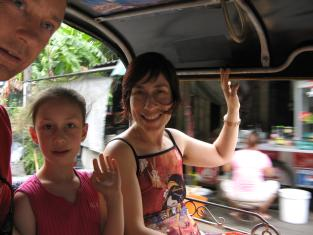
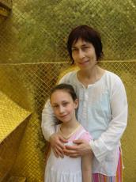
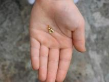
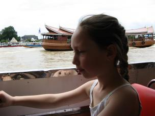

On the 3/9/07 we walked to the Grand Palace. We saw the emerald Buddha and today he was wearing his wet season outfit. He has two other outfits, one for the cold season and one for the hot season. We saw lots of plants. We saw lots of golden buidings and gold and colourful statues of demons and other creatures. We saw lots of poles that had golden tiles on them. We were going to go to another temple called wat poh, but we were told it wasn't open and I didn't feel like going. After that, we went on a boat to China town, and we bought a pencil case. Chinatown was very crowded and not very Chinesey. We saw lots of jewellery. Then we took a tuk tuk to the hotel and mamma read almost a whole chapter of Harry Potter, the philosophers stone, which we bought here in Bangkok yesterday. Today was an exciting experience but an exhausting day and we didn't do all that much more for the rest of the day.
   